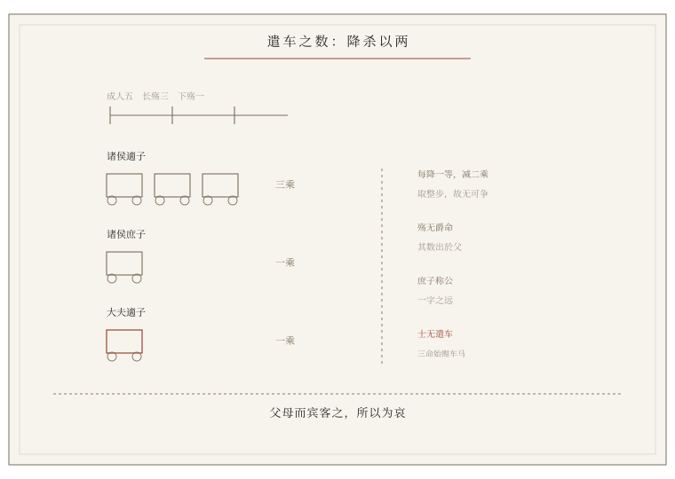

檀弓下 · 四·一 · 第 326 课
君之适长殇，车三乘；公之庶长殇，车一乘；大夫之适长殇，车一乘。
说什么事：遣车之数。诸侯之適子在长殇而死者，遣车三乘；诸侯之庶子长殇，一乘；大夫之適子长殇，一乘。
落在哪一层：以「乘」量殇。论「降杀以两，而以父之有為限」。
为何编在此位：卷八收于君恩，此处入檀弓下，第一课即论「数」。丧之末节，皆以数为礼。
【经】君之適長殤，車三乘；公之庶長殤，車一乘；大夫之適長殤，車一乘。
【注】皆下成人也。自上而下，降殺以兩；成人遣車五乘，長殤三乘，下殤一乘，尊卑以此差之。庶子言公，卑遠之。傳曰：「大功之殤小從上。」
【疏】此一节论诸侯及卿大夫之子送葬遣车之数。「君」者，五等诸侯也；今此谓诸侯適子在长殇而死，故云「君之適长殇」也。「车三乘」者，遣车也；葬柩朝庙毕，将行，设遣奠竟，取遣奠牲体臂臑，折之为段，用此车载之，以遣送亡者，故谓之遣车。然遣车之形甚小。所以必须遣车者，《杂记》云「大飨既飨，卷三牲之俎，归于宾馆，父母而宾客之、所以为哀也」——是言父母方将远去，亦如宾客之义，所以载牲体送之也。但遣车之数，贵贱不同；若生有爵命车马之赐，则死有遣车送之，诸侯七乘，大夫五乘，此后有明文；郑惟诸侯既七乘，降杀宜两，则国王宜九乘，士三乘也。今此所明并是殇未成人，未有爵命车马之赐而得遣车者，言其父有之，得与子也。诸侯既自得七乘，其適子成人五乘，长殇三乘，故「君之適长殇，车三乘」也。「公之庶长殇，车一乘」者，公亦诸侯也；適长殇既三乘，庶子若成人乃三乘，而长殇则一乘。「大夫之適长殇，车一乘」者，大夫自得五乘，適子成人三乘，长殇降二，故一乘也。案下注云「人臣赐车马，乃得有遣车」，礼三命始赐车马；则士无遣车。
適 正妻所生之长子，承嗣者。音嫡。
长殇 十九至十六而死，谓之长殇。殇，未成人而死。
车三乘 遣车三辆。乘，辆。
遣车 送葬时载遣奠牲体之小车。遣，送。
降杀以两 每降一等，减二乘。
庶子 妾所生之子。
大功之殇 服大功之殇者。
诸侯的適子在长殇而死，遣车三辆；诸侯的庶子长殇，遣车一辆；大夫的適子长殇，遣车一辆。
此节是一张数目表，但它先讲清「遣车是什么」。
遣车不是运棺的车，是送行的车。葬柩朝庙毕，将行，设遣奠；取奠中的牲体（臂臑）折成段，装在这小车上，随柩而行——「以遣送亡者」。
疏引《杂记》一句，是全节的根：「父母而宾客之，所以为哀也。」 父母将远去，就把他当宾客送，载上牲体。这是「遣」字的真义。
数：成人五、长殇三、下殇一（诸侯之子）；庶子成人三、长殇一；大夫之子成人三、长殇一。降杀以两，整齐可算。
第一层 把死者当宾客送 「父母而宾客之」——这句话在礼书里是很重的。亲子之丧，礼却用「宾客之礼」送他：载牲体、备车、如待客。
这不是疏远，是「承认他要走了」。待客之礼的本质是「送」，丧礼的本质也是「送」。用送客之形，才送得出去。
第二层 降杀以两：等差取整步 成人五、长殇三、下殇一，每降一等减二。为什么减二不减一？因为「两」是整步，一步跨过去，无可争。
礼的等差，凡取整步者，皆为「使人不争」。差一寸则争一寸，差一层则无可争。三百一十五课论棺以「层」，此处论车以「两」，同一用心。
第三层 殇者何以为有：父有之，子得与 殇者未成人，未有爵命车马之赐，本不应有遣车。而经许之，疏解得明白：「言其父有之，得与子也。」
这一条是礼的「承荫」：子无其爵，父有之，则子得用父之数而降等。礼在这里承认「家」是一个单位，不只看个人。
第四层 庶子称「公」：一字之远 注「庶子言公，卑远之」。適子称「君之適」，庶子称「公之庶」——不称君而称公，把他放远一格。
同一个父亲，两个儿子，一个是「君之適」，一个是「公之庶」。差在一个字上。礼的亲疏，常在这种称谓的微差里。
第五层 士无遣车：礼有「无」 疏「士无遣车」，因为三命始赐车马，士不及。礼不是人人有份的清单，它有「无」的一项。有「无」，才见「有」之重。
与今日何干 今人送葬，车队几辆、花圈几排，多争面子。此节给的尺是：数有定，且「以其父之有」为限。你所用的不是你的数，是上辈的数降下来的。争无可争。
| 左 | 右 |
|---|---|
| 遣车 | 载牲体以送 |
| 父母而宾客之 | 哀之所由 |
| 成人五乘 | 诸侯之子 |
| 长殇三乘 | 適子 |
| 下殇一乘 | 再降 |
| 庶长殇一乘 | 卑远之 |
| 降杀以两 | 整步，不争 |
| 父有之子得与 | 承荫 |
| 士无遣车 | 三命始赐 |
画一处墓道之前，视点平视。三组小车自左向右排列：左组三辆、中组一辆、右组一辆。车形极小（只一只方箱，两轮，前有一辕），箱中各载一段折好的牲体。三组之间各留一道空，空处地面画一道浅痕。远处一道土垄。不画人、不写文字。赭色只用在左组第一辆的辕上。
